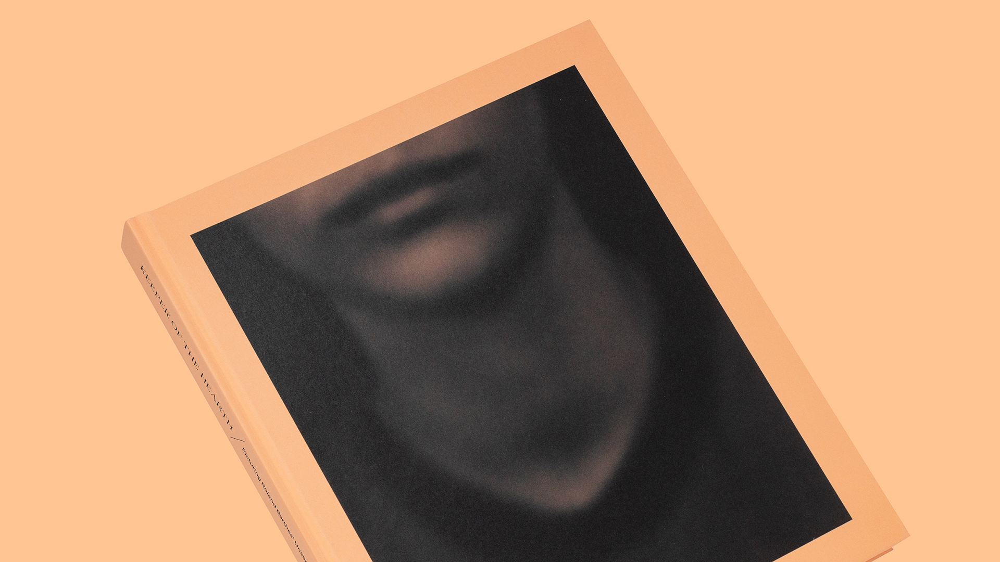

Keeper of the Hearth
Edited by Odette England
Published by Schilt Publishing
This book marks the 40th anniversary of Roland Barthes’ renowned work Camera Lucida (La Chambre claire) in 2020. Artist Odette England invited more than 200 photography-based artists, writers, critics, curators, and historians from around the world to contribute an image or text that reflects on Barthes’ unpublished snapshot of his mother at age five. This snapshot is known as the Winter Garden photograph. Barthes discusses it at length in Camera Lucida, but never reproduces it. It is one of the most famous unseen photographs in the world.
Reviews
Awards
